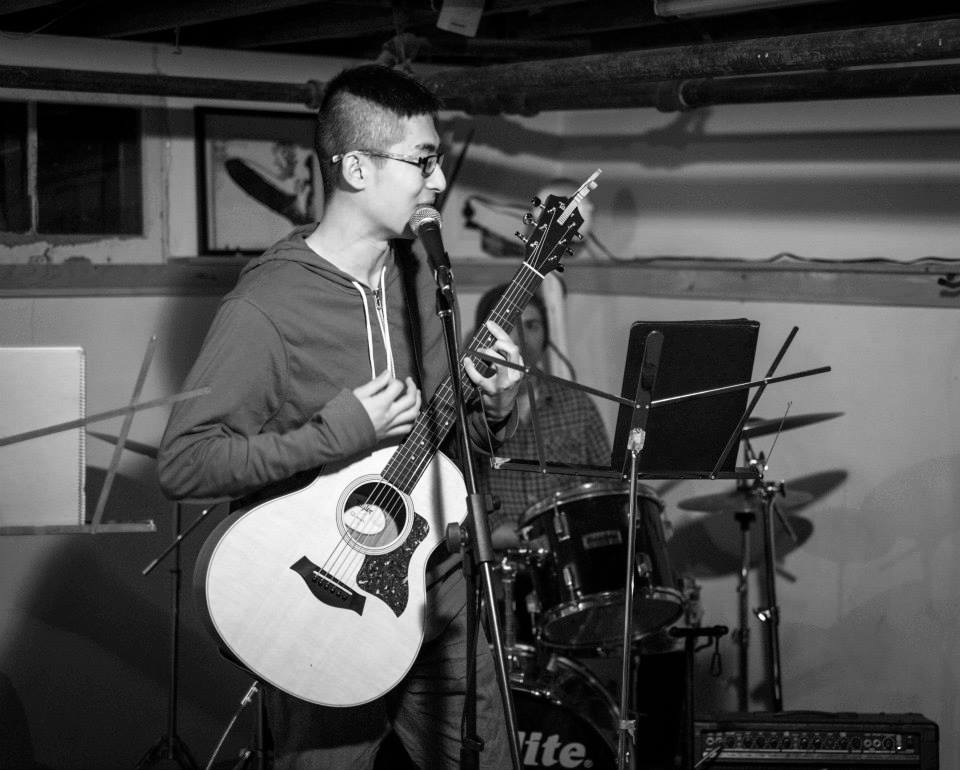
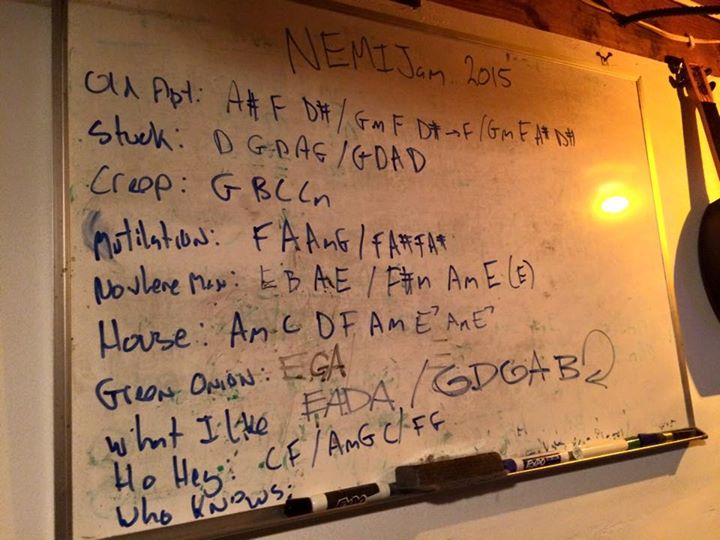
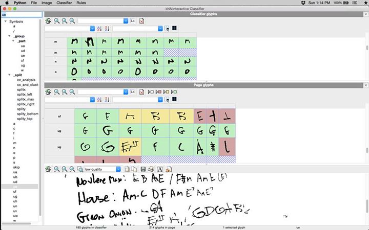

SIMSSA at NEMISIG
Posted by ahorwitz on February 04, 2015
This last weekend, a group of students from McGill attended the 2015 meeting of the Northeast Music Information Special Interest Group (NEMISIG) at Ithaca College and Cornell University in Ithaca, NY. Post-doctoral fellow Andrew Hankinson was there along with graduate students Ling-Xiao Yang and Andrew Horwitz. During the Research Talks section on the first day, Andrew Hankinson gave a talk on SIMSSA, mentioning:
- An overview to the project similar to Ichiro’s introductory talk from the SIMSSA Workshop IV last September
- The progress on Cantus Ultimus
- Ling-Xiao’s work on Rodan
- Andrew Horwitz’s work on Diva.JS
He also gave an overview of the other work happening in the lab, including the CRIC robotic harpsichord under construction and Gabriel Vigliensoni’s work on user context in music recommendation systems.
With all the work that we’ve been putting into music over the last few months, this year’s NEMISIG came with the chance to jam and play some as well! Pictured below is Ling-Xiao playing “Nowhere Man” by The Beatles at NEMIJAM on Saturday night.

Unfortunately, due to weather, the McGill delegation was only able to stay another half-day for a portion of HAMR (Hacking Audio and Music Research). Before the conference started, organizer Doug Turnbull gave us a challenge to perform OCR on his setlist/cheat sheet from the previous night’s jam session.

Using some tools from Rodan, it was easy!

Unfortunately, we didn’t have the chance to convert the chords to sound, but maybe that’s a job for NEMISIG 2016 in Philadelphia!